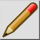

Upraviť blok
Panel s nástrojmi / ikona:


Ponuka: Blok > Upraviť blok
Skratka: B, E
Príkazy: blockedit | be
Panel s nástrojmi / ikona:


Tento nástroj otvorí aktívny blok na úpravy. Možno ho upravovať rovnako ako hlavný výkres. Ak sa chcete vrátiť k hlavnému výkresu (nazývanému „ModelSpace"), aktivujte blok „ModelSpace" a znova kliknite na to isté tlačidlo na úpravu daného bloku alebo spustite nástroj „Edit Main Drawing" v ponuke „Block".